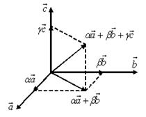

Базис и координаты
Базисом в пространстве называются три некомпланарных
вектора, взятые в определенном порядке.
Базисом на плоскости будем называть два неколлинеарных
вектора на этой плоскости, взятые в определенном порядке.
Базисом на прямой будем называть любой ненулевой вектор
этой прямой.

Каждый вектор может быть разложен по базису в пространстве и
это разложение единственно.
Коэффициенты разложения вектора по базису называются
координатами вектора в данном базисе и в каждом базисе определяются однозначно:
Координаты вектора
в данном базисе
.
При сложении двух векторов и
их координаты (относительно любого
базиса) складываются. При умножении вектора на
любое число  все его координаты умножаются на это
число.
все его координаты умножаются на это
число.
все его координаты умножаются на это
число.Системой координат в пространстве называют совокупность
базиса и некоторой точки, называемой
началом координат.
Вектор , идущий из начала
координат в точку  , называется радиус-вектором
точки .
, называется радиус-вектором
точки .
, называется радиус-вектором
точки . Координатами точки называются
координаты вектора .
Таким образом, координаты радиус-вектора и координаты точки совпадают.
совпадают.